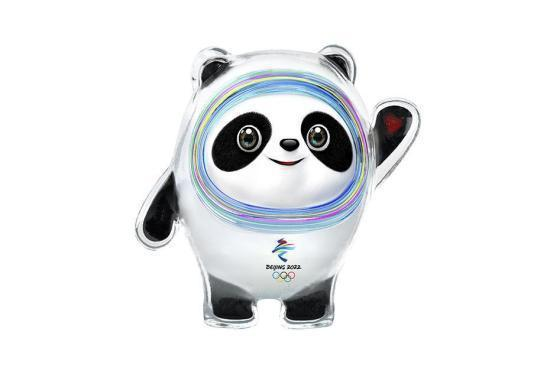

9月17日，2022年北京冬奥会吉祥物“冰墩墩”和冬残奥会“雪容融”在北京发布。北京冬奥会和冬残奥会吉祥物于2018年8月8日面向全球征集，共收到设计方案5816件。图为2022年北京冬奥会吉祥物“冰墩墩”。北京冬奥组委 供图
墩墩，意喻敦厚、健康、活泼、可爱，契合熊猫的整体形象，象征着冬奥会运动员强壮的身体、坚韧的意志和鼓舞人心的奥林匹克精神。
“冰墩墩”头部外壳造型取自冰雪运动头盔，彩色光环装饰灵感源自于北京冬奥会的国家速滑馆——“冰丝带”，流动的明亮色彩线条象征着冰雪运动的赛道和5G高科技。“冰墩墩”左手掌心的心形图案，代表着主办国对全世界朋友的热情欢迎。
“北京冬奥吉祥物集中国和中国人民的精华和特色于一身。”国际奥委会主席托马斯·巴赫表示，今天标志着北京又迈出历史性的重要一步，成为奥运历史上首个既举办过夏季奥运会、又将举办冬季奥运会的双奥之城。
冬残奥会吉祥物“雪容融”以灯笼为原型进行设计创作。灯笼代表着收获、喜庆、温暖和光明。